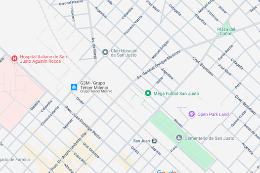

SOBRE NOSOTROS
HG Mates es una empresa argentina dedicada a la venta de mates artesanales y accesorios relacionados con la cultura del mate. Nacida con la pasión por mantener viva una tradición tan arraigada en nuestro país, MateArte se posiciona como un puente entre lo clásico y lo moderno, ofreciendo productos únicos que combinan diseño, funcionalidad y un profundo respeto por la identidad cultural. Nos especializamos en mates de calabaza forrados en cuero, mates de madera torneada, acero inoxidable, cerámica, y una variedad de bombillas y termos de excelente calidad. Nuestros productos están pensados tanto para el uso cotidiano como para regalos empresariales o personalizados. Creemos que tomar mate es mucho más que una costumbre: es compartir, es pausa, es vínculo. Por eso, cada uno de nuestros mates cuenta una historia, llevando consigo el trabajo de artesanos locales y el compromiso con materiales duraderos. Además, promovemos el consumo consciente, utilizando insumos sostenibles y procesos responsables. MateArte atiende tanto al público general como a revendedores y empresas, con envíos a todo el país y al exterior. A través de nuestras redes sociales y tienda online, buscamos estar cerca del cliente, ofreciendo atención personalizada y asesoramiento. Nuestra misión es llevar el mate argentino a cada rincón del mundo, con productos que reflejan identidad, calidez y calidad.
El proceso de elaboración de nuestros mates combina técnicas artesanales tradicionales con estándares modernos de calidad. Todo comienza con la selección cuidadosa de las materias primas. En el caso de los mates de calabaza, elegimos frutos secos y curados naturalmente, libres de rajaduras, que luego se limpian, lijan y se someten al proceso de curado interno para asegurar su resistencia y durabilidad. Posteriormente, se forran a mano con cuero genuino o sintético, cosido artesanalmente, y se les agrega una virola metálica en la boca para mayor resistencia. Los mates de madera se tallan en torno, se lijan cuidadosamente y se tratan con aceites naturales para realzar la veta y protegerlos de la humedad. En los de acero y cerámica, priorizamos materiales aptos para el contacto con alimentos, resistentes a altas temperaturas, y de fácil limpieza. Las bombillas también son parte clave del proceso: ofrecemos modelos de acero inoxidable, bronce niquelado y alpaca, todas con filtro desmontable. Cada producto pasa por un riguroso control de calidad antes de ser embalado. En todos los casos, priorizamos el trabajo manual, la atención al detalle y la originalidad de los diseños. Cada mate es único, no sólo por su forma y textura, sino porque representa horas de dedicación de nuestros artesanos, quienes imprimen en cada pieza un sello de identidad y pasión por lo que hacen.